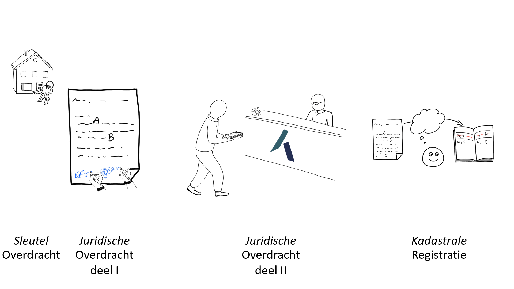
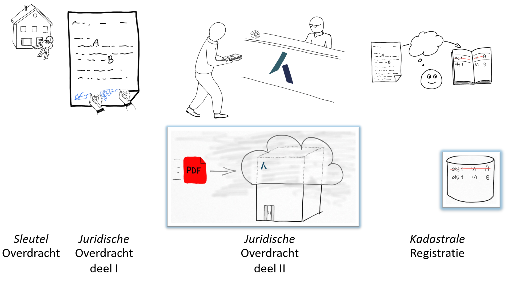
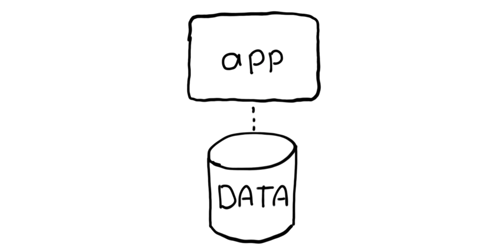
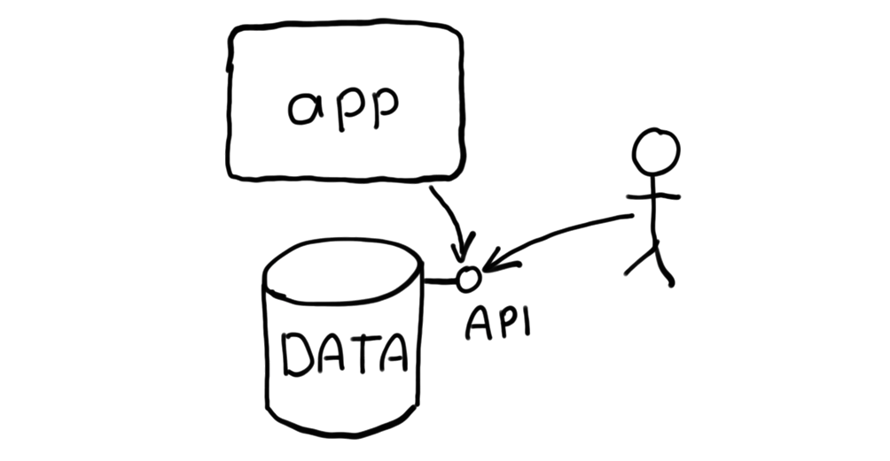
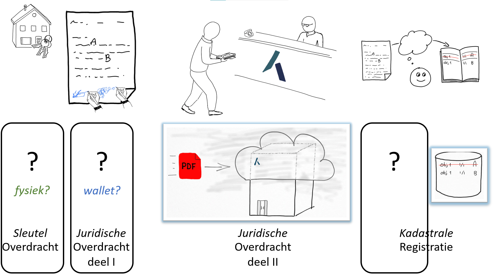
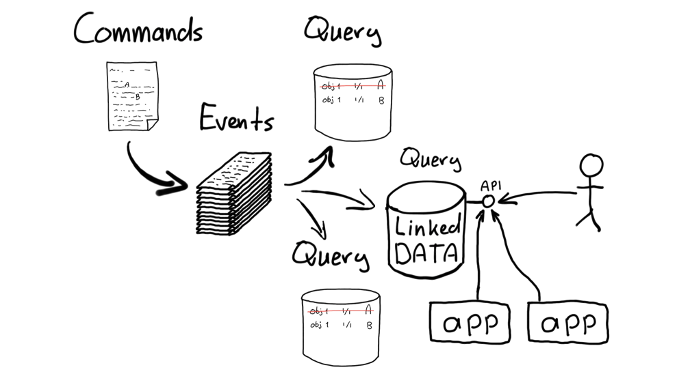

Papier naar digitaal
Om te kunnen zien en bedenken welke richting de ontwikkelingen opgaan, is het van belang om naar de geschiedenis te kijken. In het digitale tijdperk en zeker vandaag de dag, anno 2024, is data een veelbesproken onderwerp. Maar waar komt de data van vandaag eigenlijk vandaan? Hoe is die data ontstaan?
History doesn't repeat itself, but it often rhymes - (arguably) Mark Twain
Kort overzicht
- 1960 Mechanisatie
Van handgeschreven naar typemachines, gestandaardiseerde formulieren - 1980 Automatisering databases
Boeken van registers in databases
Applicatie en database zijn vervlochten - 2000 Automatisering Applicaties
Applicatie bevat logica en zorgt voor data integriteit
Applicatie en database staan los van elkaar - 2020 Automatisering API's
Data kan los bevraagd worden door andere applicaties
API First - 2040 Digitalisering
Toevoeging van semantiek, events (gebeurtenissen), geautomatiseerde procesuitvoering en open samenwerking
Ketens van software + uitvoerbare contracten + projecties
1960 Mechanisatie
Van handgeschreven naar typemachines, gestandaardiseerde formulieren
Zo rond de jaren '60 van de vorige eeuw kwam de mechanisatie goed op gang. Waar voorheen handgeschreven papieren de standaard waren, kwamen er standaard formulieren en typemachines om schaalbaarder en herkenbaarder te gaan werken. Deze getypte formulieren waren echte papieren documenten en werken voorzien van 'natte handtekeningen'; door mensen met inkt ondertekende handtekeningen.
Bij het kopen van een huis werden de aktes door de notaris opgesteld en uitgetypt. Nou ja, dat uittypen werd meestal door (vrouwelijke!) medewerkers gedaan. Nadat de benodigde handtekeningen gezet waren, bracht de notaris de aktes van die dag naar het kantoor van het Kadaster. Daar werden de aktes ingeschreven in het Openbaar Register en vervolgens door Kadaster clerken verwerkt in de Kadastrale Registratie. Dit was een boek (eigenlijk een serie boeken) waarin de huidige eigenaren werden bijgehouden. Als een akte werd verwerkt, werd de verkopende partij als eigenaar doorgehaald en de koper als nieuwe eigenaar toegevoegd, uiteraard voorzien van de juiste aandelen van dat eigendom en referentie naar het stuk, de akte. Deze boeken werden leggers genoemd. Een grootboek van de eigendommen van de percelen in Nederland.

1980 Automatisering Databases
Boeken van registers in databases
Applicatie en database zijn vervlochten
Zo naar de jaren '80 was automatisering een gemeen goed. Computersystemen als mainframes en ook de Personal Computer, de PC, werden toegankelijk en bruikbaar. De aandacht voor de automatisering waren voor de interne processen en vooral indexen. Het kunnen zoeken door informatie om sneller en gemakkelijker informatie te kunnen geven - via de telefoon en fax - waren de voornaamste drijfveren. In deze automatiseringsslag zijn vooral de leggers, de grootboeken in databases gestopt!
In de jaren daarna kwam ook de uitwisseling van documenten op gang. Zo in de jaren '90 kwamen er oplossingen om documenten in een digitaal formaat te kunnen versturen. Eerst via email en later via internet. De nadruk en aandacht van deze automatisering was het transport van documenten tussen organisaties.

De technologische staat van die tijd is een rijke en grote database met veel functionaliteiten en een kleine applicatie laag daar omheen voor de gebruikersinteractie.
2000 Automatisering Applicaties
Applicatie bevat logica en zorgt voor data integriteit
Applicatie en database staan los van elkaar
In de jaren 2000 werd software ontwikkeling een belangrijker onderdeel. Een database was 'maar' een deel van de gebruikerservaring en mogelijkheden. Een applicatie was veel rijker in logica en 'ergens' werd uiteraard de data uit de database wel gebruikt en gewijzigd. Waar voorheen alle wijzigingen door de database beheerd werden, werd nu de applicatie steeds meer verantwoordelijk voor de logica en integriteit van de data. De database was 'slechts' de opslag van data, de integriteit 'in rust' en het kunnen doorzoeken van de data.
Dit zorgde ervoor dat de applicatie en de database los van elkaar kwamen te staan. De database had duidelijke taken en technische performance-eisen. De applicatie had andere verantwoordelijkheden en ook andere schalingsvereisten. In deze scheiding werd het duidelijker wat 'de data' was en wat 'de logica' was. En wat hun verhouding was.

2020 Automatisering API's
Data kan los bevraagd worden door andere applicaties
API First
Met de groei van het internet en daarmee het integreren van ketens, werden de koppelvlakken tussen delen in de keten steeds relevanter. En waar in de voorgaande jaren de applicatie 'de baas' was, werd data steeds vaker direct uit de database gehaald en gebruikt. Het wijzigen van data gebeurt nog steeds door een applicatie met strikte logica, maar het gebruik van de data is ook mogelijk zonder de applicatie.
Het wordt steeds belangrijker dat de data goed toegankelijk is. In het tijdperk van internet zijn het de internetprotocollen die daarvoor moeten zorgen. Data via HTTP kunnen ophalen, bevragen en in samenhang kunnen brengen met andere data. Dit vraagt om Application Programming Interfaces, oftewel API's. Met het gebruik en de opkomst van API's komt de data nog verder los van de muterende applicaties en wordt het steeds meer van belang om te weten wat die data betekent en in welke context deze ontstaan is. De roep om semantiek en de opkomst van technologieën (zoals Linked Data) die daar invulling aan geven, is duidelijk zichtbaar.

2040 Digitalisering
Toevoeging van semantiek, events (gebeurtenissen), geautomatiseerde procesuitvoering en open samenwerking
Ketens van software + uitvoerbare contracten + projecties
In 2020 is de basis van de automatisering nog steeds de papieren processen die geautomatiseerd zijn. Er komen echter technologieën die digitaal ondertekenen mogelijk maken en smart contracts. Hiervoor is het noodzakelijk dat processen echt digitaal ontworpen zijn en is het nog meer van belang dat data goed voorzien is van metadata.

Het is vandaag nog niet mogelijk om precies te weten hoe die digitalisering eruit ziet in 2040. We kunnen niet in de toekomst kijken. Maar we kunnen wél kijken wat er 'rijmt op het verleden'!
De metadata van de data beschrijft niet alleen wat de data betekent. Het moet ook antwoord kunnen geven op waar de data vandaan komt. Waar is deze ontstaan? Onder welke voorwaarden / situatie? En met het aantal devices dat - via het internet - verbonden is aan elkaar, worden decentrale netwerken steeds meer van belang. Op welke manier is het mogelijk om autonoom te handelen en transacties uit te voeren die toch in het grote geheel integer zijn en blijven en impact daarin hebben?

Transitie naar digitalisering
Onze gooi naar de toekomst is een aantal concepten die we gezamenlijk denken in protocollen noemen. Waarom? Omdat digitale processen een door computers (machines) uitvoerbare contracten gaan uitvoeren waarin data-uitwisseling is meegenomen en de interactie met gebruikers, de mens, duidelijk en effectief is. Dat betekent dat de internetprotocollen die 'slechts' de verbinding tussen apparaten realiseert, uitgebreid moeten worden met smart contracts of iets wat daarop lijkt. Is het blockchain? Nee. Ja. Mischien. Blockchain regelt digitale processen wel op een nieuwe manier. Daar moeten we zeker lering van trekken. In ieder geval wel iets met transacties ... of gebeurtenissen, events. Maar er is meer. Het is ook Linked Data. Het is ook Open Standaarden, Open Source, open samenwerken. Het gaat namelijk over de uitwisseling in ketens. Dat betreft altijd meerdere partijen die gezamenlijk moeten werken en zorgdragen voor de smart contracts. Het betekent automatisering nog veel verder doorvoeren.
Lees verder ...